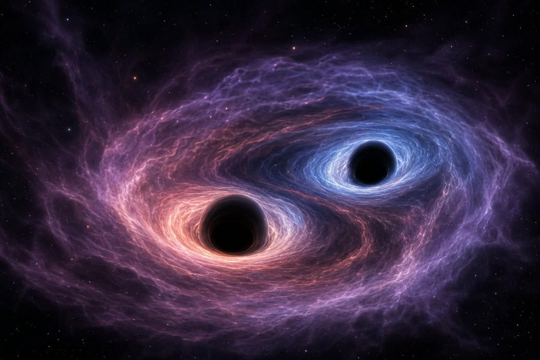
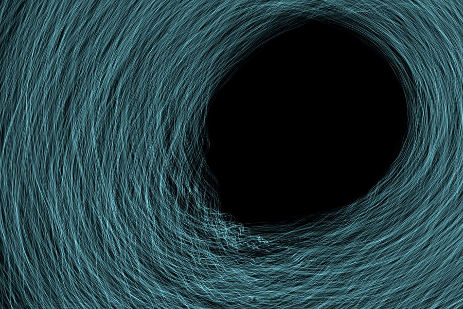
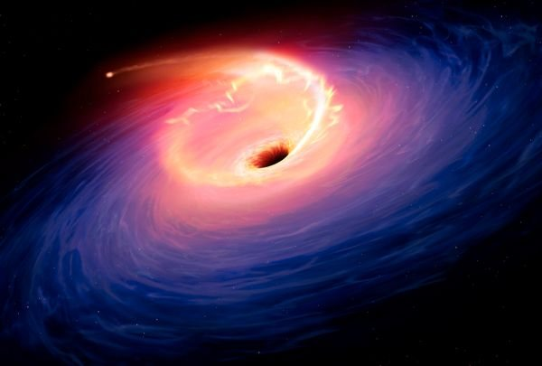

Finding What Cannot Be Seen
Black holes give out no light of their own, so scientists look for their effects. Pick a method below.

Listening to ripples
When two black holes merge, they send ripples through space and time. Detectors measured these waves, and the first detection was announced in 2016 (Abbott et al., 2016).

Taking a picture
Digital artwork by Drljaca / Pexels, not the real telescope image.
The Event Horizon Telescope linked radio telescopes around the world. In 2019 it produced the first image of a black hole's shadow, in the galaxy M87 (Event Horizon Telescope Collaboration, 2019).

Watching the surroundings
.
Hot gas falling toward a black hole glows brightly, and stars near the centre of our galaxy orbit an unseen mass. This work shared the 2020 Nobel Prize in Physics (Nobel Prize Outreach, 2020).
Discovery Timeline
| Stage | Year | Event | Why it matters |
|---|---|---|---|
| Theory | 1915 | General relativity | Einstein describes gravity as curved space and time |
| 1916 | Schwarzschild solution | First exact solution to Einstein's equations (Schwarzschild, 1916) | |
| 1974 | Hawking radiation | Black holes should slowly lose energy (Hawking, 1974) | |
| Observation | 2016 | Gravitational waves | Merging black holes detected |
| 2019 | M87* image | First picture of a black hole's shadow | |
| 2022 | Sagittarius A* image | Our own galaxy's central black hole |
Key Terms
- Event horizon
- The boundary beyond which nothing can return.
- Singularity
- The centre, where density may become extreme.
- Accretion disk
- Hot, glowing gas spiralling in. It is how we often see a black hole's surroundings.
How does the Event Horizon Telescope work?
It links radio telescopes across the Earth so that together they act like one Earth-sized telescope.